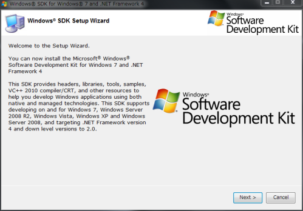
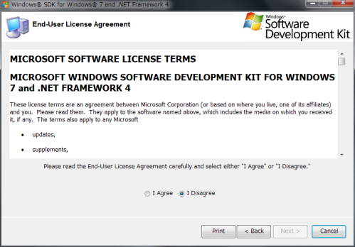
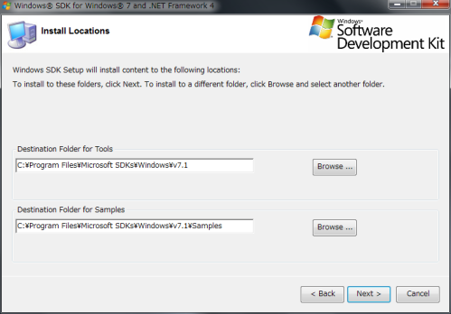
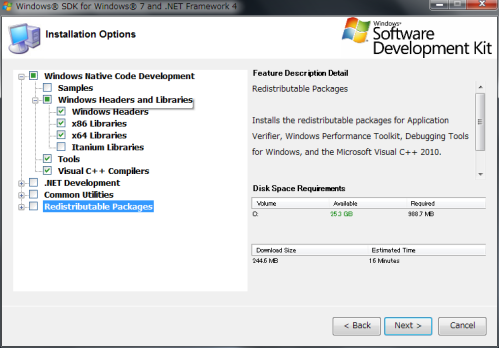
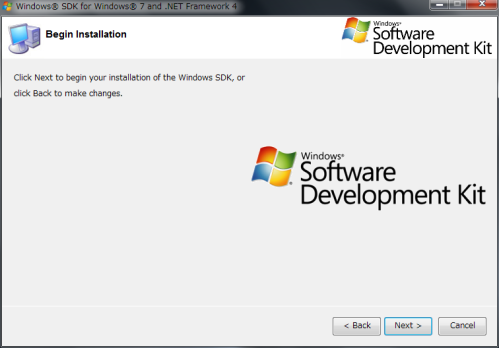
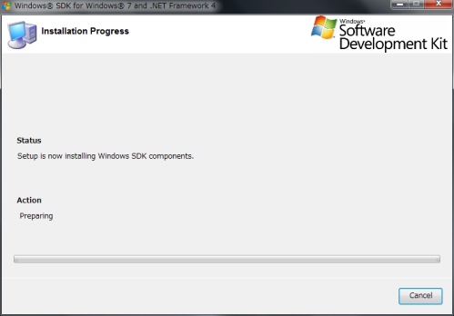
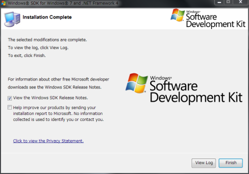

Pythonのモジュールインストール用にWindows SDKをセットアップする
WindowsでPythonのC/C++拡張モジュールをインストールするときに必要となる ビルド環境を作ったときのメモ。
前提環境
実験した環境は次のとおり。
- Windows 7 Home Premium Service Pack 1 (64bit)
- Python 3.4.1 (32bit)
最初はMinGWを使って、と思っていたのだが pywin32 のビルドの実験をしているうちに Windows SDKの環境ができてしまったので、それ用の手順をまとめておくことにする。
Windows SDKのインストール
Python 3.4.1はVC++10.0でコンパイルされているので、それに対応する Windows SDKをインストールする。
ページの [Download] をクリックしてダウンロードされるインストーラ (winsdk_web.exe) を実行する。
[Next>] をクリック。
License Agreement 確認して、[I Agree] を選んで [Next>] をクリック。
インストールパスはこのままでOK。[Next>] をクリック。
インストールするものを選ぶ。
- Windows Headers
- x86 Libraries
- x64 Libraries
- Tools
- Visual C++ Compilers
の5つだけを選んで、[Next>] をクリック。
[Next>] をクリック。
インストールが始まる。
[Finish] をクリックして、インストール終了。
Windows SDKの不具合にパッチする
このバージョンのWindows SDKには2つ不具合があるらしいので、 パッチしておく。
vcvar32.batへのパッチ
vcvarsall.batを実行しても、エラーが出て正しく動作しない。
C:\> C:\Program Files (x86)\Microsoft Visual Studio 10.0\VC\vcvarsall.bat
Setting environment for using Microsoft Visual Studio 2010 x86 tools.
ERROR: Cannot determine the location of the VS Common Tools folder.
C:\Program Files (x86)\Microsoft Visual Studio 10.0\VC\bin\vcvars32.bat に次のパッチを当てる。
--- vcvars32.bat.installed 2009-11-15 19:52:58.000000000 +0900
+++ vcvars32.bat 2014-09-23 21:39:10.844720400 +0900
@@ -5,7 +5,8 @@
@call "%VS100COMNTOOLS%VCVarsQueryRegistry.bat" 32bit No64bit
-@if "%VSINSTALLDIR%"=="" goto error_no_VSINSTALLDIR
+@if "%VCINSTALLDIR%"=="" goto error_no_VSINSTALLDIR
+@set "VSINSTALLDIR=%VCINSTALLDIR:~0,-3%
@if "%FrameworkDir32%"=="" goto error_no_FrameworkDIR32
@if "%FrameworkVersion32%"=="" goto error_no_FrameworkVer32
@if "%Framework35Version%"=="" goto error_no_Framework35Version
@@ -75,22 +76,24 @@
@exit /B 0
:GetVSCommonToolsDirHelper32
-@for /F "tokens=1,2*" %%i in ('reg query "%1\SOFTWARE\Microsoft\VisualStudio\SxS\VS7" /v "10.0"') DO (
+@for /F "tokens=1,2*" %%i in ('reg query "%1\SOFTWARE\Microsoft\VisualStudio\SxS\VC7" /v "10.0"') DO (
@if "%%i"=="10.0" (
@SET "VS100COMNTOOLS=%%k"
)
)
@if "%VS100COMNTOOLS%"=="" exit /B 1
+@SET "VS100COMNTOOLS=%VS100COMNTOOLS:~0,-3%
@SET "VS100COMNTOOLS=%VS100COMNTOOLS%Common7\Tools\"
@exit /B 0
:GetVSCommonToolsDirHelper64
-@for /F "tokens=1,2*" %%i in ('reg query "%1\SOFTWARE\Wow6432Node\Microsoft\VisualStudio\SxS\VS7" /v "10.0"') DO (
+@for /F "tokens=1,2*" %%i in ('reg query "%1\SOFTWARE\Wow6432Node\Microsoft\VisualStudio\SxS\VC7" /v "10.0"') DO (
@if "%%i"=="10.0" (
@SET "VS100COMNTOOLS=%%k"
)
)
@if "%VS100COMNTOOLS%"=="" exit /B 1
+@SET "VS100COMNTOOLS=%VS100COMNTOOLS:~0,-3%
@SET "VS100COMNTOOLS=%VS100COMNTOOLS%Common7\Tools\"
@exit /B 0
cvtres.exeの置き換え
- このあたり [1] の情報によると、このバージョンのWindows SDKに付属している
cvtres.exe には不具合があるらしい。.NET Frameworkに付属するものと置き換えておく。
- C:\Windows\Microsoft.NET\Framework\v4.0.30319\cvtres.exe を C:\Program Files (x86)\Microsoft Visual Studio 10.0\VC\bin へコピーする
- C:\Windows\Microsoft.NET\Framework64\v4.0.30319\cvtres.exe を C:\Program Files (x86)\Microsoft Visual Studio 10.0\VC\bin\amd64 へコピーする
環境変数の設定
Pythonモジュールをインストールするときに、distutils経由で vcvarsall.bat (vcvars32.bat) が呼び出される。 これで VC++ 関係の環境変数は自動的に設定される。
しかし、実際のコンパイルには C:\Program Files\Microsoft SDKs 以下のファイルも必要なため、以下の環境変数設定をする。
set PATH=%PATH%;C:\Program Files\Microsoft SDKs\Windows\v7.1\Bin
set INCLUDE=C:\Program Files\Microsoft SDKs\Windows\v7.1\Include
set LIB=C:\Program Files\Microsoft SDKs\Windows\v7.1\Lib
動作確認
PyCrypto 2.6.1 をインストールしてみる。
C:\> pip install pycrypto
C:\Users\paone>pip install pycrypto
Downloading/unpacking pycrypto
Running setup.py (path:C:\Users\paone\AppData\Local\Temp\pip_build_paone\pycrypto\setup.py) egg_info for package pycrypto
Installing collected packages: pycrypto
Running setup.py install for pycrypto
...
Successfully installed pycrypto
Cleaning up...
C:\Users\paone>
うまくインストールできた。
おまけ
冒頭に書いていた pywin32 のビルドの実験は、見事に失敗。 ビルド中に MFC 関連のファイルを要求されたので、 (Exrepss版じゃない) Visual Studio がないとダメみたい。
脚注
| [1] | updated cvtres.exe breaks build with LINK : fatal error LNK1123: failure during conversion to COFF: file invalid or corrupt |